Tarih Öncesi Dönem
Tarih Öncesi Dönem
Grafik tasarım, görsel bir iletişim sanatıdır (Becer, 2015, s.33). Tarihi binlerce yıl öncesine dayanan grafik tasarım, diğer sanat dalları gibi toplumla birlikte var olmuş, toplumla birlikte yaşamış, değişmiş ve gelişmiştir.
Paleolitik dönemin en bilinen sanat yapıtı olarak Avusturya Willendorf’ta bulunan yaklaşık 25-30.000 yıllık bir kadın heykelciği gösterilmektedir (Becer, 2015, s.83).

İnsanlık var olduğundan beri en temel ihtiyaçlardan biri hayatta kalma mücadelesidir. Hayatta kalma mücadelesi ilk insanlar olarak bilinen Neandertaller’den beri devam etmiştir. Bu insan türü 1 milyon yıl önce taş ve tabakaları yontarak işe yarar hale getirmiş daha sonra da ateşten yararlanmayı öğrenmiştir. Bu tarihten çeyrek milyon yıl sonra ise bugünkü biçimlerine benzeyen çok az ulaşılmış el baltaları ortaya çıkmıştır. Kesin olmamakla birlikte bu sanatsal üretimin ilk basamağı sayılabilir. Yaklaşık İ.Ö. 40.000 yıllarında bu insan türü yok olmuş ve bizim de üyesi olduğumuz “Homo Sapiens Sapiens” insan türü kalmıştır. Ağaç ve pişmiş kil gibi dayanıksız malzemelerden yapılan sanat ürünleri diyebileceğimiz nesneler hakkında doyurucu bir bilgiye ulaşılmamıştır. Ancak Paleolitik dönemin en bilinen sanat yapıtı olarak Willendorf Venüsü gösterilmektedir (Becer, 2015, s.83).
İletişim grafik tasarımın ana unsurlarından biridir. İlkel çağlarda mağara duvarlarına yapılan çeşitli betimlemeler grafik tasarımın ilk örnekleri olarak kabul edilebilir. Yazı keşfedilmeden önce insanlar fikir ve düşüncelerini mağara duvarlarına çizdiği ve boyadığı imgelerle ifade etmiştir. İnsanoğlunun hayatta kalma mücadelesinden sonra bir diğer gereksinimin -iletişim kurma ihtiyacının- bu şekilde sağlandığı söylenebilir.

Kuzey İspanya’nın Altamira mağarasında Paleolitik dönemden kalma resimler ve Güney Fransa’nın Lascaux mağarasında İ.Ö. 15.000’li yılarına ait resimlemeler, mağara devri sanatçısının figürlerini yalınlaştırarak kimliğini ve canlılığını başarılı bir şekilde stilize ettiğini gösterir. Bu üslup, günümüz amblem ve simge tasarımına önemli katkılar sağlamaktadır (Becer, 2015, s.84).
Mezopotamya Uygarlığı
Sümerler ilk yazı sistemini geliştiren toplum olarak bilinmektedir. Bu yazı sistemi IV. Uruk döneminde (şehrinde) bulunduğu sanılan “Çivi Yazısı”, insanlık tarihinin dönüm noktalarından biri olarak kabul edilir. Tapınak raporlarının tutulması amacıyla geliştirilen yazının bulunuşuyla daha sonra sözleşmeler, bilimsel ve edebi yapıtlar kil tabletler üzerine kaydedilmiş ve kütüphaneler kurulmuştur (Becer, 2015, s.84).
 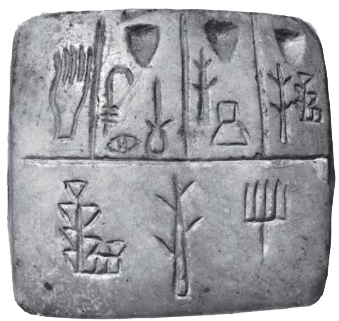
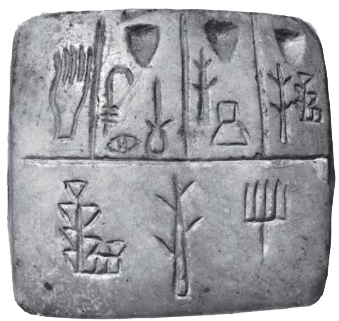
 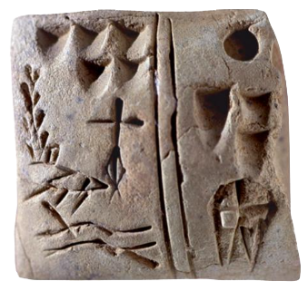
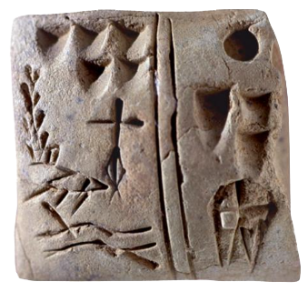

İnsanlar zaman içerisinde daha fazla mesaj iletme ihtiyacıyla birlikte mağara duvarlarına yapılan resimlemelerin soyutlamasıyla resimsel yazıları ve piktogramları kullanarak oluşturdukları yazı sayesinde daha kalıcı, okunabilir ve aktarılabilir bir iletişim türü ortaya koymuşlarıdır. Başlarda gündelik ihtiyacı karşılamak amacı ile ortaya çıkan piktogramlar, zamanla duygu ve düşünce gibi derin anlamlar taşıyan bir ifade şekli oluşturmuştur. Farklı piktogramların bir araya getirilmesiyle oluşturulan yazıyla daha zengin bir iletişim dili ortaya çıkmıştır (Bulak, 2019, s.20). Piktogram, bir eşyayı, bir objeyi, bir yeri, bir işleyişi, bir kavramı resmetme yoluyla temsil eden semboldür (https://tr.wikipedia.org/wiki/Piktogram, t.y.).
Mezopotamya, Dicle ve Fırat nehirleri arasında bir yaşam alanı olarak Sümerler tarafından
kurulmuştur. Akadlar, Babilliler ve Asurlular için de bir yaşam alanı olan Mezopotamya’da sanat,
halka hizmet amacı güden ve dinsel inançların yönlendirdiği anonim bir sanattır. Halk tanrıya
ulaşma inancı doğrultusunda çalışıyor ve tüm ürettiklerini “Ziggurat” adı verilen tapınaklarda
depo ediyordu. Yapılan araştırmalara göre bu tapınaklardaki yiyecek stoklarını kaydetme
ihtiyacıyla Sümerler ilk yazı sistemini geliştiren toplum olarak bilinmektedir.

Ticari belgeleri ve sözleşmeleri onaylayan, dini ve kraliyet ilanlarının yetkisini kanıtlayan kil çivi yazısı tabletlerin yazarını tanımlayabilecek bir yönteme ihtiyaç vardı. Mezopotamya silindir mühürleri, belgeleri mühürlemek ve onların sahte olmadığını kanıtlamak için bir çözüm oldu (Meggs & Purvis, 2016s, s.10-11).
Bu mühürler kişilerin hangi gruba mensup olduğunu gösteren ve toplumda tanınmalarını sağlayan semboller olarak kullanılmıştır. Günümüzde kullanılan logo tasarımı, dijital imza ve marka kimliği oluşturma süreçleriyle benzer işlevleri yerine getirdiği söylenebilir.
 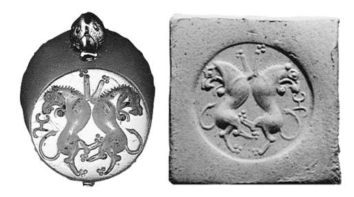
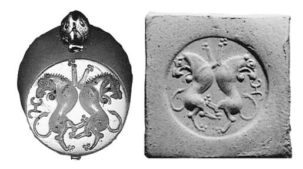
Üretilen ürünlerin, mülkiyetin sahiplenilmesi ya da ticaretteki düzeni sağlamak amacıyla çivi yazısı toplumda bir görsel kimlik oluşmasına zemin hazırlamıştır. Bu mühürler kişilerin hangi gruba mensup olduğunu gösteren ve toplumda tanınmalarını sağlayan semboller olarak kullanılmıştır. Günümüzde sadece amblemlerinden tanığımız ünlü markalar gibi düşünülebilir. Ayrıca mühürlerler görsellerin tekrar üretilmesine olanak sağladığı için matbaanın öncüsü olarak görülebilir.
Kişiye özgü imzalar olarak değerlendirilen silindir mühürlerin boyunda ya da bilekte taşınabilmesi için üzerinde bir delik bulunuyordu. Daha sonraki Asur döneminde, Mezopotamya'nın kuzeyinde daha stilize ve simgesel bir tasarım yaklaşımı gelişti. Bu mühürlere tanrıların hikayeleri resmedildi ve hayvanların savaştaki halleri mühürlere işlendi (Meggs & Purvis, 2016s, s.10-11).
Sümerler döneminde bulunan piktogramlar antik Mısır uygarlığında yerini hiyerogliflere bırakmıştır. Hiyeroglifler, belirli sesleri veya nesneleri temsil eden ve resimsel özellik taşıyan yazı simgeleridir (Bulak, 2019, s.22).
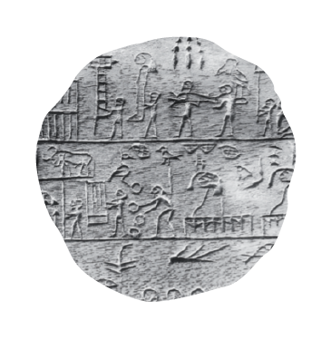
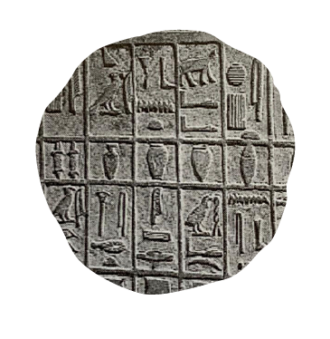
Sadece Mısır’a özgü olan Hiyeroglif (Tanrı’nın Sözleri), Eski Mısır’da yazı işlevi gören ve resim özelliği taşıyan simgelerdir. Bu yazı türü çoğunlukla mezar ve tapınaklar duvarlarına (taşa) alçak ya da yüksek kabartma şeklinde oyularak yapılmıştır (Becer, 2015, s.86).
Hiyeroglifler, belirli sesleri veya nesneleri temsil eden ve resimsel özellik taşıyan yazı simgeleridir. Sümer yazısından farkı, hem sesleri hem de anlamları ifade eden semboller içermesidir. Hiyeroglif yazıları genellikle sağdan sola okunur, ancak okuma yönü, yazının yönünü belirleyen insan veya kuş figürlerinin eğilimine göre değişebilir. Ayrıca, metinler bazen yukarıdan aşağıya ya da sırayla sağdan sola, ardından soldan sağa okunabilir (Bulak, 2019, s.22).
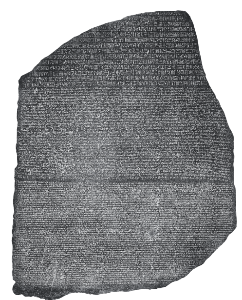
Jean-François Champollion, hiyerogliflerin çözümünde önemli bir adım attı. Champollion, bazı işaretlerin harfleri (alfabetik), bazılarının heceleri (heceleme) ve bazılarının ise önceki hiyerogliflerin nasıl okunacağını belirten işaretler (belirleyiciler) olduğunu keşfetti. Hiyerogliflerin sadece resim yazıları (piktogramlar) değil, aynı zamanda sesleri temsil eden işaretler (fonogramlar) olarak da kullanıldığını fark etti. Bu keşif, Champollion’un antik Mısır’ın gizemli sırları olduğu düşünülen hiyeroglif yazı sistemi kullanılan Rosetta Taşı’ndaki Ptolemaios’un adını doğru bir şekilde okumasını sağladı (Meggs & Purvis, 2016, s.13).
Toplumların yaşadığı coğrafya koşullarına göre yazının gelişimi ve aktarımı gelişim göstermeye devam etmiştir. Nil nehri kenarında yaşamış olan Eski Mısır Uygarlığı da nehrin bataklık kısımlarında yetişen papirüs bitkisini kullanarak kağıdın ilk örneklerini vermiştir.
Papirüs, eski çağlarda yazı yazmak için kullanılan kalın bir malzemedir ve sulak alanlarda yetişen papirüs bitkisinin (Cyperus papyrus) özünden üretilir. Ayrıca, bu malzemenin üzerine yazılmış, yan yana eklenerek birleştirilen ve erken dönem kitaplarının formu olan yuvarlanmış belgeleri de ifade eder (https://tr.wikipedia.org/wiki/Papir%C3%BCs, t.y.).
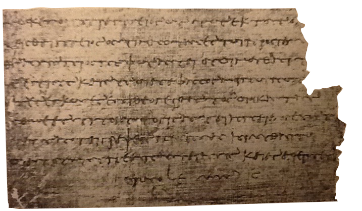İllüstrasyon, metin, başlık ya da slogan gibi sözel unsurları görsel olarak betimleyen ya da yorumlayan tüm unsurlara verilen genel bir addır (Becer, 2015, s.210).
MÖ. 1900’lü yıllarda “Ramessum Papyrus” ve “The Egyptian Books of the Dead” illüstrasyon ruloları, uzun bir papirüs üzerine yapılan, bilinen en eski el yazması hikaye kitaplarıdır (Gürdal Pamuklu, 2014, s.8). Rulo şeklindeki uzun bir papirüs kağıdı üzerine yapılan yazı ve yazılara eşlik eden resimlemeler aynı zamanda grafik tasarımın bir alanı olan illüstrasyonların ilk örneklerinden sayılabilir.
The Egyptian Books of the Dead (Ölüler Kitabı) Mısırlılara ölümden sonraki yolculukla ilgili mitolojik bilgiler iletmektedir. Ölen kişinin bakış açısıyla yazılan ve resimlenen kitap, yeraltı dünyasının tehlikelerine karşı bilgi vermesi amacıyla mezarlara yerleştirilmiştir (Meggs & Purvis, 2016,s.17). Ancak Papirüs kağıdı Mısır’da tamamen bugün kullandığımız kağıt haliyle kullanılmıyordu. Tıpkı yazı gibi kağıt da zaman içinde gelişim göstermiştir.
Antik Mısır kültürü, üç bin yılı aşkın bir süre boyunca etkisini sürdürmüştür. Hiyeroglifler, papirüsler ve resimli el yazmaları, Mısır'ın görsel iletişim mirasının temel taşlarıdır. Mezopotamya'dan gelen etkilerle birlikte bu yenilikler, Fenike ve Greko-Romen dünyasında alfabe ve grafik iletişim sistemlerinin gelişimini sağlamıştır (Meggs & Purvis, 2016, s.16).
Çivi yazısı, hiyeroglifler, Çince gibi erken dönem görsel iletişim sistemlerinin anlaşılması doğal olarak karmaşık ve zordu. Zaman içindeki uzun uğraşlar sonucunda “alfabe” icat edilmiştir.
Alfabenin kökeni eski Girit piktogramlarına dayanmaktadır. Fakat yazılı iletişimde bir dönüm noktası olan ilk alfabetik yazıyı Fenikeliler bulmuştur. Dışa açık bir ticaret toplumu olan Fenikeliler, çivi yazısı ve hiyeroglifi çok iyi biliyordu. Tamamı soyut biçimlerden oluşan ve okuma yönü sağdan sola olan 22 harfli ilk alfabe M.Ö. 1500 yıllarında kullanılmaya başlanmıştır (Becer, 2015, s.90).
Yunanlılar Fenike alfabesinde
bulunmayan sesli harfleri (a, e, i, o, u vb.) alfabeye ekleyerek yazıya
geometrik bir uyum ve estetik bir kalite
kazandırdılar. Aynı satır çizgisi üzerine
yerleştirilen harflerle yazı yönü soldan sağa doğru (bugün kullandığımız gibi) çevrildi. Ayrıca
Yunanlılar
papirüse bir alternatif olarak hayvan
derilerinden yapılan parşömen adı verilen yazı yüzeyini kullanmaya başladılar
(Becer, 2015,
s.90).
Alfabe, kelime olarak Yunanca’ın ilk iki harfi olan “alpha” ve “beta” dan türetilmiştir. Bir dilin, temel seslerini temsil eden görsel işaretler veya semboller dizisi olan alfabe, çivi yazısı ve hiyerogliflerde kullanılan karmaşık yüzlerce işaret ve sembole karşın, zaman içinde öğrenilmesi daha kolay yirmi veya otuz temel işaret olarak değişmiştir. Batı alfabelerinin (çivi yazısı, hiyeroglifler, tarih öncesi geometrik şekiller ve erken Girit piktogramları) zaman içindeki evrimi sol taraftaki görselde verilmiştir (Meggs & Purvis, 2016, s.21).
Bu görselde Mısır ve Mezopotamya uygarlıklarından sonra gelen Girit uygarlığı Piktogramları (Cretain pictographs), Girit kalıntılarından kalma Phaistos Diski (Phoenician) üzerindeki piktografik ve alfabe benzeri şekiller, Erken Dönem Yunan Alfabesi (Early Greek), Klasik Dönem Yunan Alfabesi (Classical Greek), Latin Alfabesi (Latin) ve Modern İngilizce (Modern English) olarak geçmişten günümüze kadar alfabenin geçirdiği evrimler gösterilmiştir.
Roma, M.Ö. 750 yıllarında Tiber nehri kenarında küçük bir köy olarak bulunuyordu. Ancak, M.S. birinci yüzyılda, kuzeyde İngiltere'den güneyde Mısır'a, batıda İspanya'dan doğuda Basra Körfezi'ne kadar uzanan güçlü bir imparatorluk haline geldi. Yunanistan’ı işgal ettikten sonra bütün kitapları ve bilim adamlarını kendi ülkelerine götürdüler.
Yunan alfabesi antik Etrüksler aracılığıyla Roma'ya ulaşmış, Romalılar, zaferlerini ölümsüzleştirmek için anıtsal bir yazı stili geliştirmişlerdir. Günümüzde kullandığımız büyük harflerin temelini oluşturan bu stillerden en önemlisi, "Capitalis Quadrata" olarak bilinir.
Çinliler çeşitli malzemelerin karışımından elde edilen hamurları işleyip kurutarak kağıt elde etmeyi başarmışlardır. "M.Ö. 105 yılında, Tsi'ai Lun adlı bir kişi, ağaç kabuğu ve ipek parçalarını karıştırarak bir kağıt hamuru hazırlamış, ardından bu karışımı hasır üzerinde kurutarak kağıt üretmiştir (Uçar, 2004, s.97).
“Anlamak” kelimesinin Çin alfabesindeki evrimi solda gösterilmiştir. Başlangıçta piktogram olan bu yazılar, zamanla soyut ve stilize edilmiş fırça darbelerine dönüşmüştür.
Çin’de yazı sistemi alfabetik değildir. Mısır hiyeroglifleri ve Girit yazısı gibi görsel bir dil olarak geliştirilmiştir. M.Ö. 1800'lerde Cangjie tarafından oluşturulduğuna inanılan bu sistem, kuşların pençe izleri ve hayvanların ayak izlerinden ilham alınarak doğadaki nesnelerin basit piktogramlarıyla şekillenmiştir. Çizimler, zamanla stilize edilerek az sayıda çizgiden oluşan, anlaşılır ve soyut tasarımlara dönüşmüştür (Meggs & Purvis, 2016, s.35).
İnsanlık tarihi için yazıdan sonraki ikinci önemli buluş olan baskının icadı Çinliler’e aittir. Çin’in geleneksel sanatlarından biri olan mühür oymacılığı, baskı tekniklerinin gelişiminde büyük bir etkiye sahip olmuştur (Becer, 2015, s.88).
Han Hanedanlığı döneminde, "chop" adı verilen mühürler yeşim taşı, gümüş, altın veya fildişi gibi düz yüzeylere kaligrafik karakterler oyularak hazırlanırdı. M.S. 500 (6. yüzyıl başlarında) civarında, insanlar "chop" mühürlerinin farklı bir versiyonunu kullanmaya başladılar. Bu yeni yöntemde, zanaatkârlar karakterlerin çevresindeki negatif alanı keserek, baskı yapıldığında karakterlerin kırmızı renkte ve beyaz bir zeminle çevrili olarak görünmesini sağladılar. Bu yenilik, blok baskı tekniğinin temelini oluşturdu. Zhao Meng-fu'nun 14. yüzyılda yaptığı keçi ve koyun resminde, bu iki farklı "chop" mühür türüne de rastlanabilir (Meggs & Purvis, 2016, s.40).
Çin’de kağıdın ve baskının keşfinden sonra başlarda kumaş baskısı yapmak için oyulan ahşap baskı tekniği daha sonra dini metinlerin anlatımı için kullanılmaya başlanmıştır. Bu teknik kullanılarak basımı yapılan ilk el yazması kitap “Diamond Sutra”dır.
Ortaçağ el yazması eserler tipografi ve harf düzeni, illüstrasyon ve görsel ifade, sayfa tasarımı ve düzenleme ilkeleri, estetik anlayış ve kültürel kimliği yansıtma, bilgi paylaşımı ve iletişim kurma gibi özellikleriyle modern grafik tasarım ögelerinin ilk örneklerini barındırmaktadır diyebiliriz.
Roma imparatorluğunun yıkılışı 5.yy’dan 15.yy Rönesans’a kadar sürmüştür. Ortaçağ, toprak sahiplerinin egemenliği üzerine kurulu feodal toplumların çağıdır. Bu dönemde Hıristiyan manastırı eğitimi ve kültürü merkezine dayalı olarak bilgilerin saklanma ihtiyacı üzerine “manuscript” ı el yazma eserler ortaya çıkmıştır. İ.S. 4. ve 9. yüzyıllarda bu eserlerde kullanılan harfler sadeleşerek “uncial” (büyük harflerden oluşan yazı) ve “yarı uncial” (küçük harflere benzeyen kıvrımlardan oluşan yazı) adı verilen yazı stilleri geliştirilmiştir
İ.S. 800 yılında ise Roma’nın kutsal imparatoru olarak anılan Frenk Kralı Şarlman, tüm Avrupa’yı tek bir çatı altında toplamak amacıyla el yazma eserlerin sayfa düzeni, yazı ve süslemelerini tek bir kalıba sokmuştur. Yazı sitili artık bugün kullandığımız küçük harflerin öncüsü olan “Şarlman Minüskülü” olarak anılıyordu (Becer, 2015, s.91).
Ortaçağda "aydınlatılmış el yazmaları" olarak bilinen süslemeli ve resimlendirilmiş el yazmaları, kutsal metinlere görsel zenginlik katmak amacıyla hazırlanırdı. Hristiyan, ahudi ve Müslümanlar için büyük bir öneme sahip olan bu eserlerin üretimi oldukça zahmetli ve maliyetliydi. Parşömen, değerli bir malzeme olduğu için dikkatle kullanılırdı. Yazıcı (scribe), hem editör hem de sanat yönetmeni olarak çalışır, metnin tasarım ve üretim sürecini yönetirdi. Aydınlatıcı (illüstratör) ise metne uygun süslemeleri ve görselleri hazırlardı. İllüstrasyonlar genellikle metin tamamlandıktan sonra eklenir ve illüstratör, ne çizeceğine dair yönlendirmeleri kenar boşluklarındaki notlardan alırdı. Bu süreç, her bir el yazmasının eşsiz bir sanat eseri olarak ortaya çıkmasını sağlardı (Meggs & Purvis, 2016, s. 49).

12.yy ortalarına gelindiğinde feodalizm yerini güçlü soyluların olduğu monarşik bir yapı içinde sürekliliğe dayalı merkezi bir hükümete bırakmaya başladı. Uluslararası ticaretin yaygınlaştığı bu dışa açılım sürecinde 1200’lerde ilk üniversiteler kurulmaya başlanmış ve kitaba yoğunlaşan talep üzerine el yazması kitaplar artmıştır. Bu el yazması ürünlerde Romanesk sanat yerine Gotik üslup kullanılmıştır. Gotik yazı, 11. ve 15. yy arasında değişik üsluplarda kullanılarak varlığını sürdürmüştür (Becer, 2015, s.92)
El yazması kitaplar, İslam ve İbrani kültürlerinde büyük bir öneme sahiptir. İslam’ın kutsal kitabı Kur’an-ı Kerim’deki kaligrafi, İslam sanatının temel dallarından biri olan hat sanatının doğmasına öncülük etmiştir (Becer, 2015, s.92).


İtalyanca’da yeniden doğuş anlamına gelen Rönesans, 15. ve 16. yüzyıl İtalya’sında başlayan, Orta Çağ ile Reform arasında yer alan köklü bir değişim dönemidir. Hümanizmin ön plana çıktığı bu çağda, insan merkezli düşünce gelişmiş, deneysel yaklaşım canlanmış ve matbaanın icadıyla bilgi daha geniş kitlelere ulaşmıştır (tr.wikipedia.org, t.y.).
Ortaçağ döneminde halk, sanatçı, bilim ve din adamı aynı kilise inancına sahipti. Fakat bu anlayış insan aklı terazisinde ölçülüp değerlendirildikten sonra dünya görüşüne uymayan bazı anlayışların olduğu fark edildi. İnsanın kendi yorum ve düşüncelerine dogmalardan daha fazla önem vermesi Ortaçağ’dan Rönesans’a geçişte önemli bir etken olmuştur. Bu yeni dünya görüşünün bir özelliği de insanın kendi dünyevi güçlerinin farkına varmasıdır. Sanat hareketleri de, toplumdaki gelişmelere paralel olarak ilerlemektedir (Turani, 2011, s.345).
 Tipo Baskının Buluşu
Tipo Baskının Buluşu
Tipo baskı, her biri bağımsız, hareketli ve tekrar kullanılabilir metal yada ahşap yüzeylerin oyulmasıyla kabartmalı harfler ile yapılan baskı yöntemidir. Yazının icadından sonra insanlık tarihindeki en önemli gelişmelerden biri olan tipo baskı, bilgiyi ekonomik şekilde çoğaltmayı mümkün kılarak iletişimde devrim yaratmış, bilginin yayılmasını hızlandırmış ve okuryazarlık oranını artırmıştır (Meggs & Purvis, 2016, s.73).
Grafik tasarım ve baskı teknolojisinde çığır açan tipo baskı, Mainz’li Johann Gensfleish zum Gutenberg tarafından bulundu. 1450 yıllarında tipografik bir kitabı basabilmek için gerekli olan karmaşık sistem ve donanımları ilk kez bir araya getiren kişidir. Guternberg, tipografi tekniğini geliştirirken “Xylotypography” adı verilen ve ilk kez Çin’de yüksek tahta kalıplara oyularak yapılan baskı tekniğinden esinlenmiştir. Gutenberg’in icadının anahtarı, her bir harfin dökümü için kullanılan harf kalıbı ve kullandığı ana malzemedir. Sistemli bir şekilde ilerleyen Gutenberg öncelikle yaşadığı dönemde Alman yazıcıları tarafından yaygın biçimde kullanılan “Textura” yazı stilini tercih etmiştir. Her harf, tüm yönlerden paralel olacak şekilde aynı yükseklikte yapılmış olan iki parçalı harf kalıbı, hem dar (T) hem geniş (M) harfler için farklı matrisleri kabul edebilecek şekilde ayarlanmıştır. Bu sayede oldukça hassas harflerin dökümünü yapmak mümkün olmuştur. Harfler için kullanılan metal malzeme ise, hem dökülebilecek kadar akışkan hem de binlerce baskıya dayanabilecek kadar sert bir alaşım geliştirilerek yapılmıştır (Meggs & Purvis, 2016, s.77).
Gutenberg, 1452 yılında ilk tipografik kitap olan İncil’i geliştirdiği baskı yöntemiyle basmaya karar verdi. Büyük çaba gerektiren bu proje, matbaacılığın ilk ve en güzel örneklerinden biri olan kırk iki satırlık İncil'in basımıyla sonuçlanmıştır. 30 x 40,5 cm boyutundaki sayfalarda iki sütun ve değişen satır sayılarıyla toplam 1.282 sayfa yer aldı. Satır sayısındaki artış sayesinde yaklaşık 60 sayfalık tasarruf sağlandı (Meggs & Purvis, 2016, s.80).
Johann Gutenberg’in hareketli harf sistemini icat ettiği dönemde ve Avrupa’nın aynı bölgesinde yaşayan ancak kimliği bilinmeyen “Oyun Kartları Ustası” olarak anılan bir sanatçı, tarihteki en eski bakır gravür baskı örneklerini üretmiştir. Gravür, bir tasarımın metal bir yüzeye kazınması ya da oyulmasıyla elde edilen bir baskı yöntemidir. Bazı araştırmacılar, Gutenberg’in sadece tipografiyi değil, bakır gravür baskı tekniğinin gelişiminde de etkili olduğunu düşünmektedir. Oyun Kartları Ustası’nın çizimleri, Gutenberg’in dönemindeki Mainz’lı sanatçılarla ilişkilendirilmiştir. Kuş, çiçek ve figür gibi ortak motifler, hem bu gravür kartlarda hem de 1450’lerde basılan süslemeli İncil’de yer almaktadır (Meggs & Purvis, 2016, s.83).


 Alman Resimli Kitabı
Alman Resimli Kitabı
Tipografik baskı tekniği ile ağaç baskı resim sanatının bir araya gelmesi, Almanya’da resimli kitap basımının yaygınlaşmasına zemin hazırlamıştır. Ağaç baskı ile resimlendirilmiş ilk kitap “Bohemyalı Çiftçi” adıyla bilinir. Almanya’da üretilen resimli kitapların en dikkat çekici örnekleri ise, ağaç baskı ustası ve grafik sanatçısı Albrecht Dürer tarafından ortaya konmuştur (Becer, 2015, s.93).

Ağaç baskı ve tipografik baskı tekniğinin bir arada kullanılarak yapıldığı diğer örnekler sağda verilmiştir. Bu örnekler alanında uzman usta illüstratörler tarafından yapılmış ve renkli ağaç baskı ve tipografik baskı tekniğiyle bir araya getirilmiştir. Grafik tasarımın bir dalı olan illüstrasyonun, kitaplardaki bilgilere eşlik eden yardımcı resimlemeler olarak, bu dönemde de ön plana çıktığını söyleyebiliriz.

Tipografi baskı tekniği Almanya’dan sonra 15. yüzyılda İtalya’da gelişme göstermiştir. 1467 ‘de İtalya’nın Subiaco kentinde Arnold Pannartz ve Conrad Sweynheym, Roma Kapital yazısı ile Şarlman minüskülünü birleştirerek günümüzde kullanılan çift kollu alfabeyi ortaya çıkardılar. Ayrıca Roma yazı karakterine farklı bir tasarım anlayışı getiren Nicholas Jenson, Venedik’te ikinci basımevini kurdu. Yine bu dönemde hümanist İtalyan bilim adamı olan Aldus Manutius, Venedik’te “Aldine” adında bir yayınevi kurarak Latin klasiklerini basmaya başlamıştır (Becer, 2015, s.93).
Grafik tasarımın bir dalı olan illüstrasyonun , kitaplardaki bilgilere eşlik eden yardımcı resimlemeler olarak, bu dönemde de ön plana çıktığını söyleyebiliriz.
Yazı Tasarımı
Yazının icadından sonra gelişen en eski ve önemli sanat ve iletişim araçlarından biri tipografidir.
Tipografi, basım tekniklerindeki ilerlemelerle birlikte bir sanat dalı olarak ortaya çıkmış, teknolojinin gelişmesiyle kullanım alanı genişlemiştir. Kitap basımından web tasarımına, afişten reklama kadar birçok alanda aktif olarak kullanılmakta ve deneysel çalışmalarla önemini sürdürmektedir. Harf tasarımı tarihine bakıldığında, bu alanda ilk bilimsel çalışmaların Rönesans döneminde yapıldığı görülür. Bu dönemde sanatçılar, antik Yunan ve Roma kültüründen esinlenerek harflerin yapısını matematiksel ve geometrik temellere oturtmaya çalışmışlardır (Kızılşafak, 2014, s.56).
Başlangıçta tipografi, her bir harfin metal kalıplarla oluşturulup metinlerin
çoğaltılmasına yönelik bir teknik olarak tanımlanırken, zamanla bu kavram evrilerek yalnızca teknik
bir işlem olmaktan çıkmış; hem el işçiliğini hem de tasarımı içeren kapsamlı ve özgün bir alan
hâline gelmiştir. 15. Yüzyıldan itibaren Rönesans’ın
hümanizm anlayışı, tipografi alanında yazı tasarımcılarının isimlerinin anılmasıyla ön plana
çıkmıştır (Arı, 2006, s.37).
18. yüzyılın son çeyreği, Fransız Devrimi ve Sanayi Devrimi ile birlikte Batı dünyasında köklü bir dönüşümün başlangıç noktası olarak kabul edilmektedir. Fransa ve Büyük Britanya merkezli olarak gelişen bu demokratik ve teknolojik gelişmeler, kısa sürede Avrupa’nın tamamına yayılmış ve toplumsal yapıda hem düşünsel hem de günlük yaşam pratiklerini köklü biçimde değiştiren etkiler yaratmıştır. Bu etkiler, “yeni bir uygarlığın doğuşu” olarak tanımlanacak kadar derin etkiler yaratmıştır. Batı’da ekonomik büyümeyi sağlayan bu süreçte, özellikle sömürgecilik başta olmak üzere çeşitli yayılmacı politikalar izlenmiştir. 18. yüzyılın ikinci yarısında teknolojik ilerlemelerin ivme kazanması, Batı’yı küresel ölçekte güçlendirmiş ve tüm bu gelişmeler beraberinde “Sanayi Devrimi olarak adlandırılan süreci başlatmıştır (Mcneill, 2002, s.645-648).
Sanayi devrimiyle birlikte teknolojide yaşanan köklü değişimlerden birisi de tarım toplumundan endüstri toplumuna geçiş olmuştur. 1780 yılında James Watt tarafından geliştirilen buhar makineleri mekanik üretim sürecini başlatmış ve endüstri toplumuna geçişte önemli bir etken olmuştur (Becer, 2015, s.95). Sanayi Devrimi’nin etkisiyle, kırsal alanlarda toprağa bağlı yaşam biçimi terk edilmiş; toplumun büyük bir kesimi sanayi merkezlerinde istihdam arayışına yönelmiştir. Bilimsel bilgi birikimi üretim süreçlerine entegre edilerek sanayi teknolojilerinin gelişimi hız kazanmıştır. Bireyin doğa üzerindeki hâkimiyeti belirgin biçimde artmış, dünya kaynaklarının sömürülmesine yönelik düşünsel alt yapı güç kazanmıştır. Sanayi Devrimi'nin enerji temelli dönüşümü, maliyeti düşük ve yüksek hacimli üretimi mümkün kılarak geniş tüketici pazarlarının oluşmasına ve talep artışına yol açmıştır. Bu durum, kapitalist üretimin sürekliliğini sağlayan temel dinamiklerden biri olmuştur (Şahin, 2024, s.282).
Baskı Alanındaki Gelişmeler
Grafik tasarımın gelişmesinde en büyük etkenlerden biri sanayi devrimidir. Kapitalist üretimin sürekliliği pazar ortamında rekabetin oluşmasına neden olmuş, ayrıca Fransız devriminin eşitliği eğitimin yayılmasına ve okur yazarlığın artması kitap üretimine olan talebin artmasına neden olmuştur. Bu durum yayıncılık, reklam ve tabelanın hızla gelişmesini sağlamıştır.
Tipografik baskı makinesinin icadından sonra ortaya çıkan litografi baskı tekniğinin sağladığı çeşitli imkanlar, tipografik baskı yöntemiyle çalışan basımevlerini olumsuz yönde etkilemiştir.

Taş baskı tekniği (litografi) 1796’da Münih’te Alois Senefelder tarafından keşfedilmiştir. Kireç taşlarının kalıp olarak kullanıldığı yöntem hem yazıyı hem de resimleri düz bir zemin üzerine basılmasına imkan tanımıştır (Keskin, 2017, s.10). Litografi günümüzde kullanılan ofset baskı tekniğinin atası olarak kabul edilebilir. Renkli taş baskının icadıyla birlikte Alman matbaacılar bu tekniğin gelişimine katkıda bulunmuştur. Amerika’nın Boston şehrinde bu baskı tekniği grafik bir üslup haline gelerek tüm basımevleri kullanmaya başladı. Afiş ve etiketler bu baskı tekniğin önemli uygulama alanları olmuştur (Becer, 2015, s.98). Bu baskı yöntemiyle tipografik baskı teknolojisi sınırlarını korurken, tasarımcılar şekil, konum ve renk açısından daha özgür tasarımlar yapmalarını sağlamıştır. Aşağıda Jules Cheret tarafından taş baskı yöntemiyle yapılan bir afiş tasarımı bulunmaktadır.


Bunu izleyen dönemde, baskı teknolojisinde hızın artırılması temel hedef hâline gelmiştir. Bu bağlamda, Alman matbaacı Friedrich Koenig, 1810 yılında buharla çalışan ilk baskı makinesini icat etmiştir. Koenig’in geliştirdiği çift silindirli buharlı sistemde, baskı sayfası alt silindirin üzerinde dönerken, üst silindir aracılığıyla mürekkep uygulanmakta; baskı işlemi ise sayfa sabit tutularak gerçekleştirilmekteydi. Bu yenilik, baskı hızını önemli ölçüde arttırmış ve baskı maliyetleri çeşitli boyutlara bağlı olarak kayda değer bir şekilde düşmüştür (Meggs & Purvis, 2016, s.158).
Sanayi Devrimi ile ivme kazanan mekanik gelişmeler, baskı teknolojisinde devrim niteliğinde dönüşümlere zemin hazırlamıştır. El tipi baskı makinelerine entegre edilen metal aksamlar, hem üretkenliği artırmış hem de baskı alanının genişlemesine olanak tanımıştır. Bu süreçte önemli bir dönüm noktası, Lord Charles Stanhope tarafından 1800 yılında geliştirilen dökme demir baskı presi olmuştur. Geleneksel ahşap preslere kıyasla daha yüksek verimlilik sunan bu model, William Bulmer’ın matbaasında kullanılarak yarı mekanik baskı sistemlerine geçişin önünü açmıştır.
Tipografinin Makineleşmesi
1886 yılında, Alman kökenli bir mucit olan Ottmar Mergenthaler, New York Tribune gazetesinde, klavye aracılığıyla çalışan ilk dizgi makinesi olan Linotype’ı tanıttı (Becer, 2015, s.99).
Tipografik baskı sürecinde, özellikle gazete ve kitap gibi yüksek hacimli yayınların üretimi, oldukça yüksek maliyetler doğurmaktaydı. Çünkü her bir karakterin ayrı bir metal kalıp olarak dökülmesi zaman alıcı bir üretim süreciydi. Linotype makinesinin icadı, gazete, dergi ve kitap gibi tipografi ağırlıklı basılı materyallerin üretimini hızlandırmış ve ekonomik bir şekilde çoğaltılmasını sağlamıştır.
Linotype makinesi, harf, rakam ve çeşitli tipografik işaretlerin negatif kalıplarını içeren bir sistemdi. Daktiloyu andıran klavyesi, bu kalıpları taşıyan dikey borulara komut veriyordu. Operatör bir tuşa bastığında, karakterin negatif kalıbı bir yuvadan aşağıya kayarak, diğer kalıplarla hizalanarak aynı yükseklikte bir satır oluşturuyordu. Makinenin haznesinde eritilen kurşun, oluşturulan negatif satır kalıplarına dökülerek, her biri kabartma (pozitif) biçimde olan satırları kurşun şeritler hâlinde ortaya çıkarıyordu (Becer, 2015, s.99).
 Tipografinin Makineleşmesi
Tipografinin Makineleşmesi
Fotoğrafın bulunuşunda önemli katkılar sunan araçlardan biri Camera Obscura olmuştur. Latince kökenli bu terim, “Camera” (oda) ve “Obscura” (karanlık) sözcüklerinin birleşiminden oluşur. Camera Obscura’nın temel çalışma sistemi, karanlık bir odanın duvarına açılan küçük bir delik aracılığıyla dış ortamdan gelen ışığın içeri yönlendirilmesi ve dışarıdaki görüntünün içerdeki duvara ters bir şekilde yansımasıdır. Bu sistem ilerleyen dönemlerde fotoğrafla birlikte birçok işlev üstlenmiştir (Gök, 2016, s.48).


Camera Obscura sistemini kullanan ilk kişi Fransız Joseph Niepce’dir. Fotografik emülsyonu (duyarkart) bulan ilk kişi olarak, ürettiği bu ışığa duyarlı yüzeyi Camera Obscura’nın içine yerleştirerek 1826’da ilk fotoğrafı çekmiştir (Becer, 2015, s.97). Yukarıda sol tarafta görünen fotoğraf, Joseph Niepce’in evinin bahçesini yansıtan bir ışık-gölge kaydıdır.
Niepce’in buluşu olan ıslak emülsyon çok çabuk bozuluyordu. Bu buluşu geliştirerek daha net görüntüler yaratmayı başaran Louis Jacques Daguerre 1839’da yukarıda sağ tarafta buılunan Paris Bulvarı’nı görüntülemiştir. Bu erken dönem dagereotipte, poz süresinin uzunluğu nedeniyle arabalar, faytonlar ve yayalar hareket halinde olduğu için kaydedilememiştir. Ancak sol alt köşede, ayakkabılarını boyatmak için durmuş bir adam ve ayakkabı boyacısı sabit kaldıkları için tarihte fotoğraflanan ilk insanlar olmuşlardır (Meggs & Purvis, 2016, s.163).
Fotoğraf makinesinin icadı yanlızca tipografi ve illüstrasyona bağlı kalmadan
tasarımlarda
gerçekliğin birebir temsiline imkan tanıyarak tasarımda anlatımı güçlendirmiştir.
Arts and Crafts Hareketi
1861'de İngiliz William Morris, sanayileşen bir anlamda ucuzlaşan tasarımlara karşı Arts & Crafts akımı ile bu tasarım anlayışına tepki göstermiş ve bu akıma öncü olmuştur (Weill, 2012, s. 15).

Sanayi devrimiyle birlikte yaşanan teknolojik gelişmeler ve yenilikler her ne kadar iş hayatını ve gündelik hayatı kolaylaştırır gibi görünse de birbirini tekrar eden taklitçi seri üretim sanat alanında yeniliğe gidilmesi gerektiği düşüncesini ortaya çıkarmıştır.
Matbaanın icadından sonra, yazı karakterlerinde gözlemlenen standartlaşma ve birbirine oldukça benzeyen tasarımlar dikkat çekmeye başlamıştır. Mekanikleşen bu tasarım yaklaşımı, estetik görünümden yoksundur. Çünkü hiçbir makine ya da üretim yöntemi insan zihninin özgün yaratım kapasitesini yansıtamaz. Aslında bu tepkiler, sanayileşmenin getirdiği mekanik yaşamın insanın iç dünyasına ulaşamayacağını vurgulama ve bu tepkiyi somutlaştırma çabası olarak görülebilir. Avrupa’da sanayi devrimiyle birlikte hız kazanan yeni teknolojileri kabullenememe toplumun bir sorunu olarak görülebilir. Çünkü o güne kadar üretim süreçlerine hakim olan el emeği ve zihinsel üretim alışkanlıkları, yerini daha standart, seri ve makine temelli üretim anlayışına bırakmak zorunda kalmıştır. Bu yeni üretim anlayışının her ne kadar esneklik ve verimlilik gibi olanaklar sunsa da , geleneksel üretim anlayışına kıyasla toplumda daha ruhsuz ve yabancı bulunmuştur (Dursun, 2013, s.46).
1861'de İngiliz William Morris, sanayileşen bir anlamda ucuzlaşan tasarımlara karşı Arts & Crafts akımı ile bu tasarım anlayışına tepki göstermiş ve bu akıma öncü olmuştur. Bu dönemde grafik ürünlerin şekillenmesinde büyük etkisi olan birçok kişi, genellikle mimarlar arasından çıkmıştır ve bu mimarlardan birisi de William Morris’dir. Endüstri devrimi etkisindeki İngiltere’de, İngilizlerin “Victoria Dönemi” olarak adlandırılan, gerici zaman diliminde taklitleşen ve zanaatçı sanat anlayışına karşı çıkan eleştirmen ve toplumbilimci John Ruskin de, Arts & Crafts hareketiyle öne çıkan William Morris'i desteklemektedir. Ruskin’in düşünsel manada karşı çıkışına William Morris somut olarak hayat vermiş ve makine, toplu üretim, sanayi gibi estetikten yoksun üretime tamamen sırt çevirmiştir (Weill, 2012, s. 15).
“Sanat ve El Sanatları” anlamına gelen Arts and Crafts akımı, 19. yüzyılın sonlarına doğru Sanayi Devrimi’nin beraberinde getirdiği toplumsal ve sanatsal karmaşaya karşı bir duruş olarak ortaya çıkmıştır. Bu akımın öncülerinden olan William Morris, el işçiliğine dayalı üretim yöntemlerinin, estetik ve işlevsellik açısından yeniden değer kazanması gerektiğini savunmuş ve tasarımın, sanatsal ifade ile zanaatkârlığın bütünleştiği bir zemine oturtulmasını önermiştir (Bektaş, 1992, s.14).
Arts and Crafts akımının felsefesini oluşturan Ruskin, sanayileşmenin sanatı toplumdan uzaklaştırdığını ve estetikten yoksun bir mühendislik faaliyetine dönüştürdüğünü savunmuştur. Bu duruma karşı çözüm olarak, Orta Çağ Gotik mimarisindeki zarif tasarım anlayışının canlandırılmasını, doğaya ve bireyselliğe dönüşü önermiştir. William Morris ise Ruskin’in fikirlerinden etkilenerek el yazması kitaplar üretmiş, Roma ve Gotik tarzlardan ilham alan çizgilerle tasarımlar geliştirmiştir (Şahin, 2019, s.63).

Grafik tasarım ve baskı işlerine yönelen Morris’in kitaplara ve Orta Çağ el yazması ile erken dönem basma eserlere büyük ilgi duymaktaydı. Roman ve Gotik üsluplardan esinlenerek hazırlanan “Golden” yazı karakteri Morris tarafından tasarlanmıştır.
Bu süreçte Morris, kiraladığı bir kır evinde eski bir el baskı makinesiyle matbaa kurmuştur. Bu girişim “Kelmscott Press” olarak adlandırılmıştır. Kelmscott Press, erken dönem basılı eserlerde tipografik ve estetik nitelikleri yeniden canlandırmayı temel amacı olarak benimsemiştir. Kitaplarda kullandığı el işçiliğiyle titizlikle yapılan baskılar, elle üretilmiş özel kâğıtlar, ahşap oyma baskı klişeleri süslemeli baş harfler ve zarif bezemelerle birlikte modern matbaacılık içinde sanatla bütünleşmiş özgün bir yayıncılık yaklaşımını temsil etmiştir (Meggs & Purvis, 2016, s.192).
Morris tarafından kurulan Kelmscott Press, tipografi ve baskı sanatı alanında önemli yeniliklere öncülük etmiştir. Bu basımevinin çalışmalarından ilham alan Amerikalı yazı karakteri tasarımcısı Frederick Goudy ise, İtalyan ve Fransız Rönesans dönemlerinin tipografik anlayışını temel alarak "Goudy" adını verdiği yazı karakteri ailesini geliştirmiştir (Becer, 2015, s.100).
 Art Nouveu Akımı
Art Nouveu Akımı
Art Nouveu akımı, 1890’dan 1910 yıllına kadar mimaride, ürün tasarımlarında, resim sanatında ve grafik tasarım gibi birçok alanda varlık gösteren, çok yönlü dekoratif bir üsluptur (Farthing, 2014, s.346).

Arts and Crafts sonrasında da Art Nouveau akımı ile İngiltere, Fransa, Avustralya, Almanya, Belçika ve Amerika Birleşik Devletlerinde illüstrasyonun en değerleri örnekleri ortaya çıkmıştır. İllüstrasyon, Aubrey Beardsley, Jules Chéret, Toulouse - Lautrec, Eugène Grasset, Alphonse Mucha gibi değerli sanatçılarla birlikte tarihteki yerini almıştır. Bu değerli tasarımların oluşmasında endüstri devrimi ile tasarımların sıradanlaşması ve basitleşmesi sebep olmuştur. Afiş tasarımlarının Avrupa’da ve daha sonraki dönemlerde Amerika’da etkisi oldukça görülecek, sanatçıların yeni teknolojilere karşı tutumları, bireysel dünyaya çekilmeleri onların iç dünyasını özgürce ifade etmelerini sağlayacaktır. Art Nouveu akımı ile tarih boyunca illüstrasyonun afiş tasarımlarında yoğun bir şekilde kullanıldığı dönem başlamış olur. Hatta bu dönemde afiş tasarımlarının ana ögesinin illüstrasyon olduğu söylenebilir (Dursun, 2013, s. 47)
İllüstrasyon, bir metni, bir konuyu ya da düşünceyi görsel olarak resimlemek olarak tanımlanabilir. El sanatları döneminde bu teknik genelde basılı kitaplarda süsleme kavramı olarak ele alınmıştır. Fakat bu dönemden 21.yy’a kadar geçen sürede süsleme unsuru olarak kalmayıp bununla birlikte bir tasarım unsuru olarak bir bütünlük ve disiplin içerisinde kullanılmaya devam etmiştir (Şayli, 2023, s.59).
Art Nouveu döneminde özellikle kitap ve afiş tasarımlarında oldukça başarılı örnekler verilmiştir. Jules Chéret, Toulouse – Lautrec ve Alphonse Mucha afiş tasarımlarında da görüleceği gibi “zarif dekoratif süslemelerin ön plana çıktığı, kıvrımların ve bitkisel desenlerin sıklıkla kullanıldığı bir sanat akımı” (https://tr.wikipedia.org, t.y.) ımını yansıtmaktadır.


Art Nouveau’nun Almanya’daki adı “Jugendstil”dir. Bu akımın önde gelen temsilcilerinden Peter Behrens, 19. yüzyılın dekoratif tarzı ile 20. yüzyılda ön plana çıkan işlevsel ve geometrik biçimleri birleştirerek, Jugendstil’i sanayi toplumu koşullarına uyarlamaya çalışmıştır. Behrens, özellikle AEG şirketi için gerçekleştirdiği kapsamlı kurumsal kimlik çalışmalarıyla bilinir. Ona göre estetik ve işlevsellik birbirini tamamlayan unsurlar olmalı ve gerçek güzellik işlevsellikten doğmalıdır. 19. yüzyıla bir tepki olarak gelişen bu görüş, “Neue Sachlichkeit” (Yeni Nesnelcilik) olarak adlandırılmıştır (Becer, 2015, s.101).

Dönemin Art Nouveau stilinde tasarlanan ve günümüzde hala kullanılmakta olan amblemlerden biri, “American General Electric” firmasına aittir. Bu amblem, klasik bir tarza sahip olmasına rağmen netliği, kolayca okunabilmesi ve tasarımdaki uyumu sayesinde, zamana meydan okuyan örneklerden biri olmuştur (Bektaş, 1992, s.12).

Behrens’in tipografi çalışmaları, dönemin yenilikçi anlayışını yansıtan bilinçli adımlar olarak görülmüştür. 1900’de kendi tasarladığı sans-serif yazıtipini bir kitapta kullanarak bu alanda bir ilki gerçekleştirmiştir. Bir yıl sonra ise kare temelli modüler sans-serif harflerle geometrik tasarım olanaklarını araştırmaya devam etmiştir (Meggs & Purvis, 2016, s.241)
Sanayi devriminin etkisiyle 19. yüzyılın sonlarında makineleşen iş hayatı toplumda yeni bir ekonomik sistemin gelişmesini sağlamıştır. Genel olarak bakıldığında 20. yüzyılı şekillendiren başlıca etmen ise bu yeni ekonomik sistemin varlığıdır. Bu dönemde yaşanan neredeyse çoğu teknolojik gelişmeler, savaşlar ve düşünce akımlarının bu yeni ekonomik sistemin etkisi altında gerçekleştiği söylenebilir.
20. yüzyılda ortaya çıkan düşünce akımları toplumla ayrılmaz bir bütün olan sanat alanında da varlık göstermiştir. Bu dönemde ortaya çıkan Kübizm, Fütürizm, Dada, Sürrealizm, De Stij, Süprematizm, Konstrüktivizm gibi modern sanat akımları ile evrensel sanat ve kültürel yaşam ciddi anlamda etkilenmiştir. Grafik tasarımda yine bu akımların etkisi altında kalmıştır.
Kübizm
Doğadan bağımsız bir tasarım anlayışı olan Kübizm, resim sanatında dört yüzyıl boyunca egemen olan Rönesans geleneğini yıkmıştır. Pablo Picasso’nun 1907’de yapmış olduğu “Avignonlu Kızlar” tablosu ise, bu akımın akımının öncüsü olarak değerlendirilir (Bektaş, 1992, s.28)>.

Sonraki birkaç yıl içerisinde, Picasso ve Georges Braque, kübizmi, nesnel gerçeklikten uzaklaşarak sonsuz düşsel formların araştırıldığı bir sanat hareketi olarak geliştirmişlerdir. “Analitik Kübizm” adlandırılan bu dönem, konunun çeşitli düzlemlere ayrılarak analiz edildiği ve nesnenin aynı anda birden fazla bakış açısından ele alındığı çalışmalarla tanımlanır (Meggs & Purvis, 2016, s.269).
1912 yılından itibaren Picasso ve Braque, eserlerinde ilk kez kâğıt kolaj unsurlarını kullanmaya başlamışlardır. Kolaj, konuya bağlı kalmaksızın serbest düzenlemeler yapılmasına olanak sağlamış ve resmin iki boyutlu bir yüzey olduğu gerçeğini ortaya koymuştur. Kolajı oluşturan malzemelerin dokusu, resimde yer alması istenen nesneyi temsilen kullanılmıştır. Bir önceki analitik yaklaşımdan farklı olarak, kolajın birleştirici ve sentezleyici yönü ön plana çıkarılarak Sentetik Kübizm akımı geliştirilmiştir (Tansuğ, 1995, s.345).
1912-1914 yılları arasında kübizmin anlayışının başlıca temsilcilerinden biri olan Fernand Léger’nin renk kullanımıyla Picasso ve Braque’ın kolaj tekniğinin birleşmesi, kübizmde önemli bir dönüşümün önünü açtı. Kübizmin "sentetik" olarak adlandırılan bu ikinci aşamasında, yapı ve tasarım ön plana çıktı; renkler daha belirgin, şekiller ise daha parçalı ve dekoratif hale geldi. Bu dönemde sanatçılar, gazete kağıdı ve kumaş gibi farklı malzemeleri tuvale yapıştırarak yeni ve yoğun anlatım olanakları yarattılar. Özellikle Braque’ın "Masa Üstünde Natürmort: Gillette" adlı yapıtı kolajın sanattaki dönüştürücü etkisini ve sentetik kübizmin karakterini açıkça ortaya koydu (Farthing, 2014, s.390)..
Sentetik Kübizm döneminde eserler veren Juan Gris geometrik biçimlerin ve tasarım anlayışının ilerlemesine önemli katkılarda bulunmuştur (Arı, 2006, s.69) .
Fernand Leger’in çalışmalarında ise, insan figürünün ve nesnelerin sadeleştirilmiş, simgesel formlara indirgenmesi, 1920’lerde modern Fransız afiş sanatını ve grafik tasarımı derinden etkilemiştir. Léger’in kentten ve makinelerden esinlenen canlı ve keskin formları, savaş sonrası modern tasarım anlayışının gelişimine katkı sağlamıştır. Kübizm, sanat ve grafik tasarımda geometrik soyutlamaya dayalı yeni bir bakış açısının öncüsü olmuştur (Meggs & Purvis, 2016, s.271)
Fütürizm
Fütürizm, objelerin kendisinden ziyade, bireyin içsel deneyim ve duygu dünyasını merkeze alan bir sanat anlayışıdır. Bu yaklaşımda, ruh hâli doğrudan sanat eserine yansıtılmaktadır. Fütüristlere göre, müzeler, kütüphaneler ve her türden akademik kurum ortadan kaldırılmalı, geçmişin otoritesinden kurtulunmalıdır (Turani, 2011, 606).
Birinci Dünya Savaşı’na kadar geçen süreçte, ulaşım ve iletişim alanındaki teknolojik ilerlemeler mesafe kavramını ve bu kavramın toplumsal algılanışını köklü biçimde dönüştürmüştür. Bu hızlı değişim, toplumsal yaşama etkilerini sanat yoluyla yansıtma arayışı içinde olan ve birbiriyle bağlantılı çeşitli sanat akımlarının doğmasına zemin hazırlamıştır. Bu yeni bilinç düzeyinin en önemli kaynağı ise, İtalyan şair Filippo Tommaso Marinetti’nin 1909 yılında edebiyat alanında yayımladığı Fütürist Manifesto ile başlayan fütürizm olmuştur. Fütürizm akımı, geleneksel değerlerin reddini ve teknolojik yeniliklerin ön plana çıkarılmasını savunmuş; kısa sürede mimariden edebiyata, bestecilikten tasarıma kadar pek çok alanda sanatçılar arasında karşılık bulmuştur (Farthing, 2014, s.396).
Marinetti’nin yayımladığı bildirge, savaş, makine çağı, hız ve modern yaşama duyulan coşkuyu dile getirmiştir. Toplumu sarsan bu metin, şu sözlerle dikkat çekmiştir:“Biz müzeleri, kütüphaneleri yok edeceğiz ve ahlakçılığa, feminizme ve tüm faydacı korkaklığa karşı savaş açacağız.” (Meggs & Purvis, 2016, s.271).
Fütüristler, teknolojiyle beraber gelişen makinelerin hızı ve hareketinden ilham alarak sanatı yeniden şekillendirme arzularını görsel sanatlar ve şiire yansıtmışlardır. Toplumsal ve kültürel dönüşümleri ifade etmek amacıyla, şiirsel anlatım ve tipografide yenilikçi yaklaşımlar benimsemişlerdir. Geleneksel anlayıştan uzaklaşan modernist sanatçılar, özellikle geometrik soyutlama ve deneysel tipografi alanında fütürist düşüncenin en çarpıcı örneklerini ortaya koymuşlardır (Mazlum, 2017, s.32).
Filippo Marinetti’nin 1914 tarihli Zang Tumb Tumb adlı ilk kitabının kapağı aynı zamanda bir ses şiiri niteliği taşıyan başlığıyla dikkat çeker. Marinetti'nin 1912 Balkan Savaşı sırasında muhabir olarak edindiği deneyimlerinden yola çıkan bu eser, topçu ateşinin seslerini tipografik olarak yansıtır.
Marinetti’nin “Les mots en liberté futuristes” eserinde yer alan katlanır sayfa niteliğindeki "Montagne + Vallate + Strade x Joffre" (Dağlar + Vadiler + Sokaklar x Joffre) -I. Dünya Savaşı'ndaki Fransız başkomutan Mareşal Joseph Joffre- başlıklı şiir, sanatçının savaş cephesini (sol alt), Fransa'yı (sol üst) ve Fernand Léger'i ziyaretini (sağ üst) görsel bir anlatımla betimler. Fütürist şairler, farklı punto, ağırlık ve yazı stillerinin kullanımının, resim ve şiiri birleştirmeyi mümkün kıldığına inanmaktaydı. Harf biçimlerinin doğasında bulunan estetik, yaratıcı şekilde işlenerek basılı sayfayı görsel bir sanat eserine dönüştürmüştür.
Marinetti’nin bir başka eseri “Les mots en liberté futuristes” içindeki bir sayfa ise cephedeki sevgilisinden gelen mektubu okuyan bir kızın üzerinde patlayan savaşın kaotik gürültüsünü ve karmasasını betimler. Marinetti'nin siperlerdeki deneyimlerinden esinlenen bu şiir, şiddetin ve kafa karışıklığının tipografik bir patlamasını yansıtmaktadır (Meggs & Purvis, 2016, s.273).
Fütürist düşünceye göre, yazı veya tipografi, somut ve anlam yüklü görsel bir biçime dönüşebilirdi. Bu bağlamda fütürist şairler, Gutenberg’in matbaa düzeninden beri süregelen grafik tasarım ilkelerini reddederek, sözcük ve harfleri kesip yapıştırmak suretiyle doğrusal olmayan, dinamik kompozisyonlar oluşturmuşlardır. Bu deneysel düzenlemeler, fotografik baskı teknikleri aracılığıyla çoğaltılarak edebi ve görsel ifade biçimlerinde radikal bir dönüşüm gerçekleştirmiştir (Meggs & Purvis, 2016, s.275).
Başka bir Fransız şair olan Guillaume Apollinaire’ye göre “kataloglar, “afişler, her türden reklam metni, inanın bana, çağımızın şiirini barındırıyor” ifadesiyle grafik tasarım alanına 1918 yılında yayımladığı Calligrammes adlı kitabında yer alan şiirlerle katkıda bulunmuştur. Calligrammes kitabında yer alan “II pleut” (yağmur yağıyor) şiirindeki harf formları, sayfanın aşağısına doğru yağmur damlaları gibi figüratif bir düzenleme ile yerleştirilerek, görsel biçim ile şiirsel içeriğin organik bütünlüğü sağlanmıştır. Apollinaire, tipografiyi yağmurun fiziksel düşüş hareketini taklit edecek şekilde kurgulayarak, okuma deneyimine mekânsal bir boyut katmıştır. Başka bir sayfasındaki tasarımda ise tipografi, bir kuşu, bir su fıskiyesini ve bir gözü biçimsel olarak temsil etmektedir. (Meggs & Purvis, 2016, s.275).
Fütürist felsefeyi grafik ve reklam tasarımına uygulayan sanatçılar arasında yer alan Fortunato Depero, tipografi ve reklam tasarımı alanlarında dinamik bir eser bütünlüğü yaratmıştır (aşağıda solda bulunan tiyatro afişi). Ayrıca Avrupa modernizminin kaynaklarını yansıtan çeşitli üsluplarda üretimde bulunan Depero kendi tipografik deneylerini, reklam çalışmalarını, duvar halısı tasarımlarını ve diğer işlerini bir araya getirdiği “Depero Futurista” adlı eserini (aşağıda sağda bulunan kitap kapağı tasarımı) yayımlamıştır.
Dadaizm
Birinci Dünya Savaşı’na ve savaşın arkasındaki kapitalist düzene karşı bir isyan olarak ortaya çıkan Dadaizm, kısa sürede anarşist, alaycı ve hiçlikçi bir sanat hareketine dönüşmüştür. Şok edici sergiler, absürt performanslar ve anlamsız bildirilerle toplumun geleneksel değerlerini provoke etmeyi amaçlamıştır. Özgür düşünceye önem veren ve sanatın yerleşik estetik kalıplarını yıkarak daha derin bir gerçekliğe ulaşabileceklerine inanan gen ç, öfkeli sanatçılardan oluşuyordu (N. Şahin, 2019, s.105).

Dada, 1916 yılında İsviçre'nin Zürih kentinde, şair Hugo Ball tarafından kurulan Cabaret Voltaire adlı mekânda, kendiliğinden şekillenen bir sanat hareketi olarak ortaya çıkmıştır. Ball’ın amacı, savaş karşıtı genç sanatçıları bir araya getirerek, onların özgürce düşüncelerini ifade edebilecekleri bir ortam yaratmaktı. Şubat ayında açılan bu gece kulübü ya da sanat salonu, kısa sürede büyüyerek şiir dinletileri, sergiler, performanslar ve çeşitli sanatsal etkinliklerin düzenlendiği canlı bir kültürel merkeze dönüşmüştür (Antmen, 2008, s.121).
Dada hareketi, kolaj tekniği ve kendini ifade etme yöntemleri bakımından kübizm ve fütürizm gibi önceki sanat akımlarından etkilenmiş olsa da, onu özgün kılan temel unsur, sanatın Birinci Dünya Savaşı sürecinde oynadığı roldür. Expresyonistler savaşın ruhani bir dönüşüm sağlayacağına inanırken, fütüristler modern savaşın mekanik doğasına hayranlıkla yaklaşmışlardır. Buna karşılık Dadaistler, sanatın insanlığa ihanet ettiğini savunmuş ve bu nedenle sanat karşıtı bir tavır benimsemişlerdir (Farthing, 2014, s.410).
Geleneksel sanatı ve savaşı protesto eden Dada hareketinin öncüsü, 1917 yılında yayımlanmaya başlayan Dada adlı derginin editörlüğünü üstlenen şair Tristan Tzara’dır. Dada akımının plastik sanatlardaki en önemli sanatçısı ise Marcel Duchamp’dır. Dada sanatçıları, toplum tarafından genellikle değersiz, rahatsız edici veya yıkıcı olarak görülen unsurları sanatın bir parçası hâline getirerek şok etkisi yaratmayı ve mevcut normlara karşı çıkmayı amaçlamış ve sınırsız bir özgürlüğü savunmuşlardır (Becer, 2015, s.102). Bu sanat yapıtlarından biri olan Marcel Duchamp’ın “Fountain” isimli "R. Mutt" imzalı bir porselen pisuar örnek verilebilir.
Dada sanatçıları, fotomontaj tekniğini geliştirdiklerini iddia etmiş ve bu yöntemi, rastlantısal görsellerle çarpıcı ve çağrışım yüklü kompozisyonlar oluşturmak için kullanmışlardır. 1918’den itibaren Raoul Hausmann (solda) eleştirel, Hannah Höch (sağda) ise toplumsal cinsiyet odaklı çalışmalarıyla bu tekniği hem politik ifade aracı hem de grafik tasarım yöntemi olarak dönüştürmüşlerdir (Meggs & Purvis, 2016, s.279).
Kurt Schwitters, Dada hareketinden etkilenerek ancak siyasal yönelimlerden uzak duran Merz adını verdiği bireysel sanat yaklaşımıyla, 1919’dan itibaren gazete kupürleri, gündelik nesneler ve atık materyaller kullanarak kolaj temelli yapıtlar üretmiştir. Schwitters’ın bu üretimleri, Dada’nın rastlantısallık, anlamsızlık ve sürpriz gibi temel öğelerini düzenli ve özgün bir tasarım dili ile harmanlayarak grafik tasarıma özgün bir katkı sunmuştur. Ayrıca Schwitters, anlam ile anlamsızlık arasındaki gerilimi temel alan şiirler yazmış ve bu şiirlerin görsel düzenlemelerini de kendisi tasarlamıştır (Meggs & Purvis, 2016, s.279).

Schwitters’ın sanatsal yaklaşımı daha çok biçimsel ve estetik denemelere dayanırken, Berlin merkezli Dada sanatçıları John Heartfield (Helmut Herzfelde), Wieland Herzfelde ve George Grosz ise sanatlarını açıkça politik bir çizgide konumlandırmışlardır. Bu isimler, eserlerini yalnızca sanatsal ifade amacıyla değil, toplumu dönüştürme ve politik farkındalık yaratma aracı olarak görmüşlerdir. Grafik tasarım ve görsel malzemeleri, propaganda niteliği taşıyan içeriklerle birleştirerek izleyiciyi düşünmeye ve eyleme geçmeye teşvik etmeyi hedeflemişlerdir (Meggs & Purvis, 2016, s.279).
Dada hareketi, Birinci Dünya Savaşı'nın başlamasıyla birlikte ortaya çıkan ideolojik ve estetik baskılara karşı bir tepki olarak gelişmiş, geleneksel sanat anlayışını reddetmiş ve yerleşik tüm sanat normlarını yıkarak tipografiyi özgür ve deneysel bir ifade aracı olarak kullanmaya yönelmiştir Dada sanatçıları, üretimlerini savaşın yol açtığı yıkıma, geleneksel değerlere ve tüketim kültürüne karşı bir duruş sergilemek amacıyla gerçekleştirmiştir (Öztuna, 2008, s.84-98).
Sürrealizim
Gerçeküstücülük anlamına gelen Sürrealizm, 1924’de Paris’te ortaya çıkmıştır. Dadacı yaklaşımı temel alan en önemli sanat akımıdır. Gerçek olarak kabul edilenin arkasındaki daha derin ve gizemli bir hakikatin izini süren Sürrealistlerin yapılarında bilinçaltı, rüyalar ve sezgisel algılar temel belirleyici unsurlar olmuştur (Becer, 2015, s.102).
Sürrealist sanatçılar, birbiriyle bağlantısız gibi görünen biçim ve nesneleri bir araya getirerek sıradışı kompozisyonlar oluşturmuşlardır. Bu ögeleri bazen perspektif derinliği içinde konumlandırmış, bazen de düz yüzeyde toplamışlardır. Nesneleri alışılmışın dışında yorumlayarak onları düşsel ve bilinçaltına ait atmosferlerde yeniden sunmuşlardır. Estetik kuralları geri planda bırakan bu yaklaşımda, çarpıcılığı artırmak için zıt renkler sıkça tercih edilmiştir. Ayrıca ilkel toplumların sanatından da esinlenen bu yaklaşımın öncüleri arasında André Breton, Salvador Dalí, Max Ernst, Joan Miró, René Magritte ve Hans Arp gibi önemli isimler yer alır (Arıcan, 2012, s.67).
Sürrealizm, grafik tasarımda görsel anlatım olanaklarını geliştirmiş ve yenilikçi ifade biçimlerinin ortaya çıkmasını sağlamıştır. Düş, sezgi ve hayal gücü gibi soyut düşünceler, görsel öğelerle somutlaştırılarak anlatıma yeni bir boyut kazandırmıştır. Somut nesneleri beklenmedik bağlamlarda kullanarak çarpıcı ve akılda kalıcı imgeler üretmiştir. Ayrıca bir konuyu birçok açıdan ele alarak grafik tasarımın görsel diline zenginlik kazandırmış, açıklayıcı metinlere ihtiyaç duymadan mesajı doğrudan izleyiciye aktarmayı sağlamıştır (Bektaş, 1992, s.53).
Sürrealizm akımıyla öne çıkan sürrealist ressam Salvador Dali, resimlerinde sıkça kendi anılarına ve rüyalarına dayanan imgeler kullanmıştır. Eserlerinde eriyen ve akışkan formlara bürünmüş saatler, vücudunda çekmeceler bulunan insan figürleri ve havada süzülen nesneler dikkat çeker ve derinlik izlenimi veren perspektif görüntüler vardır (Arıcan, 2012, s.68).
Dali, eserlerinde düşsel ve gerçeküstü unsurları harmanlayarak, grafik tasarım alanında çarpıcı etkiler yaratmıştır. Bu etkilerden birincisi, perspektif kullanımıyla derinlik hissi yaratan sahneleri iki boyutlu yüzeylerde ustalıkla işleyerek görsel etkiyi arttırmıştır. İkincisi ise, gerçeklik algısını afiş, kitap ve dergi kapakları gibi tasarım yüzeylerine taşıyarak tasarımlara özgün ve dikkat çekici bir nitelik kazandırmıştır (Bektaş, 1992, s.51).
Sürrealizmin önde gelen sanatçılarından Rene Magritte, akıl ve akıl dışı arasındaki sınırları ortadan kaldıran eserleriyle tanınır. Eserlerinde gerçeklik ve yanılsama arasında kurduğu özgün ilişki, grafik tasarımda yaratıcı ifade biçimlerine ilham vermiştir (Arıcan, 2012, s.68). .
Max Ernst, grafik iletişimde benimsenen birçok özgün tekniğin gelişimine katkı sağlamıştır. 19. yüzyıl romanları ve kataloglarındaki ağaç baskılarından etkilenen Ernst, bu görselleri kolaj yöntemiyle yeniden yorumlayarak alışılmadık kompozisyonlar üretmiştir. Bu sürrealist kolajlar, illüstrasyon sanatını güçlü bir biçimde etkilemiştir. Ayrıca Ernst, frotaj tekniğiyle yüzey desenlerinden yola çıkarak düşsel imgeler oluşturmuş; dekalkomani ile çeşitli görselleri sıra dışı biçimlerde eserlerine entegre ederek başta illüstrasyon ve baskı olmak üzere pek çok görsel sanat alanında kalıcı etkiler bırakmıştır (Meggs & Purvis, 2016, s.283).
Frotaj tekniği, dokulu bir yüzeyin üzerine kağıda benzer ince bir malzeme yerleştirilerek mumboya vb. bir araçla üzerine sürtülerek alttaki dokunun üstteki yüzeye aktarılması yöntemidir (https://tr.wikipedia.org/wiki/Frotaj, t.y.). Dekalkomani (Decalcomania) ise, boya ince bir kâğıda sıçratılıp henüz kurumadan başka bir kâğıda rastgele aktarılır; önceden planlama yapılmaksızın spontane biçimde oluşan imgelerle çalışılır..

1920’li yıllarda profesyonel olarak fotoğrafçılıkla ilgilenen Man Ray, Dadaizm ve sürrealizm akımlarını fotoğraf sanatına entegre etmiş; hem karanlık oda teknikleriyle hem de alışılmadık stüdyo düzenlemeleriyle özgün çalışmalar ortaya koymuştur. Man Ray, fotoğraf tarihinde bir ilki gerçekleştirerek, yoğun tonlu alanlarda koyu hatlar oluşturan ve biçimlerin çevresini vurgulayan solarizasyon tekniğini yaratıcı bir ifade biçimi olarak kullanan ilk fotoğrafçıdır. Bu yöntem, henüz tam olarak oluşmamış bir fotoğraf görüntüsüne yeniden ışık verilmesiyle elde edilir (Meggs & Purvis, 2016, s.288).
Man Ray, kamera kullanmadan oluşturduğu ve doğrudan fotoğraf kâğıdı üzerine nesneleri yerleştirerek elde ettiği baskılara "rayograph" adını vermiştir (Meggs & Purvis, 2016, s.288).
Ayrıca Man Ray, distorsiyon (görüntüde bozulma), dokulu yüzeyler üzerinden baskı alma ve çoklu pozlama gibi deneysel yöntemler kullanarak, düşsel imgeler ve zaman-mekân algısına dair yeni anlatım biçimleri geliştirmiştir. Tüm bu sürrealist anlayışı, yalnızca fotoğraf sanatı için değil, aynı zamanda grafik tasarım alanında harmanlayarak kullanmıştır (Meggs & Purvis, 2016, s.288).
Süprematizm ve Konstrüktivizm
Kazimir Malevich’in 1915’te “0.10 Son Fütürist Sergisi”nde sunduğu “Siyah Kare” adlı yapıtı ve duyurduğu Süprematizm akımı, sanat tarihinde önemli bir dönüm noktası olmuştur. Rusya’daki siyasal, toplumsal ve ekonomik dönüşümlerle eş zamanlı gelişen avangart sanat ortamının bir ürünü olan Süprematizm, saf soyut sanatı hedeflemiş; nesne temsiline dayanmayan, sezgiye dayalı bir yaratım süreciyle şekillenmiştir. (Bulut & Kaya, 2019, s.153).

Malevich’in 1913’teki opera sahne tasarımlarında temellerini attığı bu akımın simgesi olan Siyah Kare, yalnızca geometrik bir biçim değil, aynı zamanda uzay, hiçlik ve sonsuzluk gibi soyut kavramların sanatsal temsili olmuştur. Sergilenme biçimiyle sanatta gelenekselliğin karşısında duran yeni bir ikondur. “Siyah Kare”, nesnesiz resmin öncüsü ve Süprematizm’in ilk manifestosu olarak sanat tarihinde yerini almıştır (Bulut & Kaya, 2019, s.153).
Malevich’in süprematizm etkisindeki bir eseri de Pervyi tsikl lektsii (İlk Dersler Dizisi) adlı yapıtın kapağında kullanılmıştır.
Rus Devrimi’nin hedeflerini daha somut ve işlevsel biçimde destekleyebilecek, daha az ruhani fakat toplumsal faydayı önceleyen bir sanat anlayışına duyulan ihtiyaç doğrultusunda, Süprematizm’in yalın ve dinamik estetik anlayışı temel alınarak, bu yaklaşım grafik sanatı, tiyatro, endüstriyel tasarım ve mimari bağlamında daha geniş alanlara uyarlayarak konstrüktivizm akımı gelişmiştir (Farthing, 2014, s.400).
Yeni bir dünya düzeninin kurulmasının zorunlu olduğuna inanan sanatçılar, sanatı geleneksel anlamda estetik bir ifade aracı olarak görmekten vazgeçmiş; onun artık doğrudan işlevselliğe hizmet etmesi gerektiğini savunmaya başlamışlardır. Bu anlayış, sanatın felsefesinin ve kavramsal çerçevesinin yeniden yapılandırılmasını gerekli kılmıştır. Bu dönüşümün merkezinde ise, “sanatsal dışavurum yerine zihinsel tasarım süreçlerini ifade eden konstrüksiyon” kavramı yer almaktadır (Antmen, 2008, s.103). Bu kavram, Birinci ve İkinci Dünya Savaşları arasındaki süreçte en yaygın biçimde kullanılan sanatsal bir terim ve yöntemlerden biri olarak karşımıza çıkmaktadır. Sanatta soyutlama arzusunun aksine, bu anlayış; sanatı, toplumsal yaşamın ortak ihtiyaçlarına yanıt verebilecek, işlevsel bir araç olarak konumlandırmıştır (Mazlum, 2017, s.58).
1921 yılında Vladimir Tatlin ve Alexander Rodchenko önderliğinde bir araya gelen yirmi beş sanatçı, “sanat sanat içindir” anlayışını reddederek, sanatı toplumsal bir araç olarak konumlandıran yeni bir anlayış benimsemişlerdir. Kendilerini yeni kurulan komünist toplumun ihtiyaçlarına yanıt verecek biçimde; endüstriyel tasarım, görsel iletişim ve uygulamalı sanatlar alanlarında üretim yapmaya adamışlardır. Bu konstrüktivistler, sanatçının artık resim gibi “işlevsiz nesneler” üretmeyi bırakıp afiş gibi toplumsal fayda sağlayan pratik araçlara yönelmesi gerektiğini savunmuşlardır (Meggs & Purvis, 2016, s.319). Bu sanatçılar arasında grafik tasarım alanının başlıca temsilcileri Alexander Rodchenko ve El Lissitzky’dir (Becer, 2015, s.103).
El Lissitzky, 1917 Ekim Devrimi’ni insanlık için bir dönüm noktası olarak görmüş; sanatın, teknolojinin ve toplumsal mühendisliğin birleşimiyle yeni bir toplumun inşa edileceğine inanmıştır. Kendini bir “inşa edici” olarak tanımlayan sanatçı, bireysel estetikten uzaklaşıp toplumsal faydaya odaklanmış, grafik tasarımı yalnızca estetik bir alan olarak değil, yapısal bir inşa süreci olarak ele alarak alana köklü yenilikler getirmiştir. Kitap ve dergi tasarımlarında dinamik diyagonal eksenlere (sayfaya eğik çizgiler boyunca yerleştirilmesiyle elde edilen bir düzenleme yöntemi) dayanan asimetrik kompozisyonlar kullanmış, modüler ızgara sistemleriyle matematiksel düzen anlayışını grafik tasarıma taşımıştır (Meggs & Purvis, 2016, s.320-322).
El Lissitzky, matbaa dizgi sisteminin sınırlamalarına karşı çıkarak teknik çizim araçları ve elle yapıştırma yöntemleriyle deneysel tipografik uygulamalar geliştirmiştir. Fotomontaj tekniğini karmaşık mesajları iletmek amacıyla grafik tasarımla bütünleştirmiş, bu alandaki kullanımını güçlendirmiştir. Almanya ve Hollanda’daki sanat çevreleriyle kurduğu ilişkiler sayesinde konstrüktivist düşünceyi Batı Avrupa’ya taşımış, dergiler ve yayınlar aracılığıyla etkisini yaygınlaştırmıştır (Meggs & Purvis, 2016, s.320-322).
El Lissitzky ayrıca grafik tasarımı toplumsal mesajların aktarımında etkin bir araç olarak kullanmış, kadın ve erkek figürlerine eşit yer verdiği afiş tasarımıyla sembolik bir iletişim dili geliştirmiştir. Tüm bu yeniliklerle Lissitzky, grafik tasarımın sanat, mimarlık, fotoğraf ve teknolojiyle birleşerek modern anlamda yeniden tanımlanmasına öncülük etmiştir (Meggs & Purvis, 2016, s.320-322).
Alexander Rodchenko, sanatın toplumsal sorumluluk taşıdığına inanarak geleneksel resim pratiğini bırakmış, tipografi, montaj ve fotoğraf gibi alanlara yönelmiştir. 1921 sonrası dönemde, özellikle şair Mayakovski ile iş birliği içinde, yalın ve etkili görsel iletişim tasarımları üretmiştir. Güçlü geometrik düzenler, düz renk blokları ve kalın sans serif el yazısı şeklinde ürettiği harfller, Sovyetler Birliği'nde sans serif yazı karakterlerine öncülük etmiştir. Mayakovski’nin editörlüğünü yaptığı “Novyi Lef” (Sanatların Sol Cephesi) adlı derginin tasarımlarını yapan Rodchenko, tasarımlarında üst üste baskılar, hassas hizalama ve fotomontaj teknikleriyle birlikte keskin geometrik şekiller ve kalın tipografi unsurlarını bir arada kullanmıştır (Şekil 94) (Meggs & Purvis, 2016, s.325).
 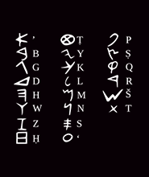
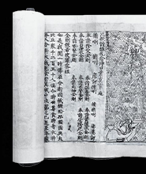
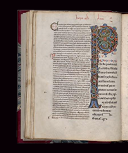
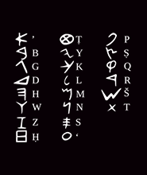
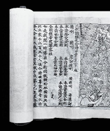
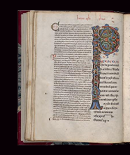